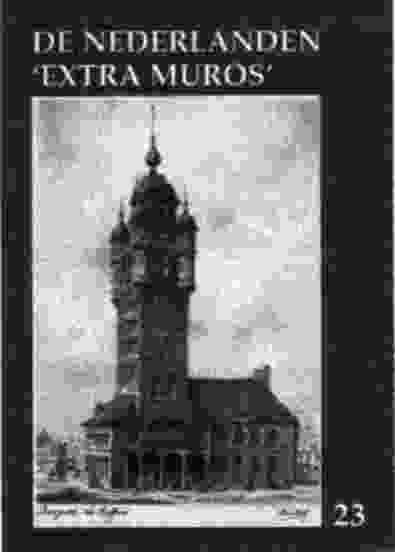

> publicaties > jaarboek 23 (2001):
De Nederlanden 'extra muros'
In De grote Geus: Hendrik van Brederode schets dr. A. van Hulzen
de rol die deze medestander van Willem van Oranje gespeeld heeft in de
jaren die de eigenlijke Nederlandse opstand tegen Filips II voorafgingen.
Naast de algemene context van die jaren heeft de auteur vooral oog voor
de gebeurtenissen die zich afspeelden in de (thans) Nederlandse randgebieden,
inzonderheid de Franse Nederlanden.
Frans-Vlaanderenkenner Cyriel Moeyaert besteedt uitgebreid aandacht
aan Pieter Andries, priester-leraar in Sint-Winoksbergen. Pieter
Andries was een van de mensen die een uitgebreid antwoord verstrekten op
de enquête die abbé Grégoire, in 1790 namens de Franse
overheid, inrichtte met betrekking tot de in het revolutionaire Frankrijk
gesproken streektalen. Pieter Andries bouwde zijn antwoorden uit tot een
ware apologia pro lingua neerlandica.
In zijn Kroniek de Franse Nederlanden volgt Johan van Herreweghe
andermaal de Frans-Vlaamse actualiteit met betrekking tot het jaar 2000
op de voet. Belangrijke en minder belangrijke, maar steeds significante
feiten en gebeurtenissen passeren daarbij de revue.
Een paar jaar terug besteedde Erik Martens aandacht aan de Boerenkrijg
in de Romaanse gebieden van de Nederlanden. Thans behandelt hij Het
gewapend verzet tegen de Franse Republiek in de Duitse Nederlanden.
Daarbij komen, naast uiteraard de Luxemburgse Klöppelkrieg ook de
tegenwoordige Oostkantons en de eraan grenzende (thans Duitse) territoria
aan bod.
Pieter Jan Verstraete voegde andermaal een hoofdstuk toe aan z'n
compendium over de Friese Beweging. In deze aflevering komt Jan Melles
van der Goot of Friesland en de Nieuwe Orde aan de beurt. Daarmee wordt
een sluier gelicht over een meer recente periode van de eerder politiek
gerichte tak van de Friese beweging.
Aansluitend op z'n bijdrage in het vorige jaarboek rondt Zeno G.M. Kolks
in deze editie zijn bijdrage af over de Toepassing van Bentheimer zandsteen
aan gebouwen. Dit keer wordt bijzonder aandacht besteedt aan voorbeelden
uit de woningbouw.
Dr. Timothy Sodmann onderzoekt in zijn goed onderbouwde bijdrage
over De historische en culturele betrekkingen tussen de Oostelijke Nederlanden
en het Westmunsterland de wisselwerking tussen beide gebieden doorheen
de eeuwen die aan de moderne staatsvorming voorafgingen.
De traditionele slotbijdrage Kroniek en boekbesprekingen bundelt
andermaal een reeks kortere bijdragen en recensies met betrekking tot uitgaven
in en over de Nederlandse grensgebieden in Frankrijk en Duitsland.
Het nieuwe jaarboek telt andermaal 176 p. en is overvloedig geïllustreerd.
De leden kregen het einde mei toegestuurd in ruil voor hun bijdrage (750
BEF, 42 Gld, 37 DEM of 125 FFR). Vanaf 15 juli bedraagt de
prijs 850 BEF, 45 Gld, 43 DEM of 142 FFR (zie ook de rubriek 'mededelingen').